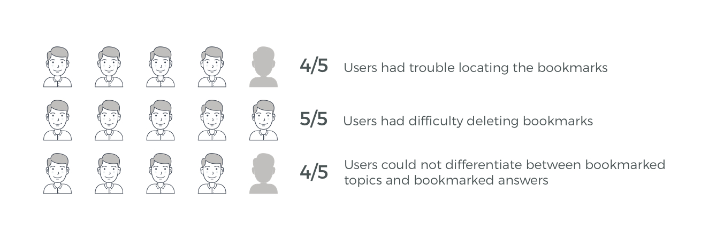

Quora has built a community around the sharing of information and experiences. It is a great resource for those looking for answers from subject experts and those who've had first hand accounts in specific situations. Because Quora is widely used as a resource, being able to quickly save and access information is an important feature that is often overlooked.
The Challenge
How can I improve the existing bookmark system? What other pain points can I discover through user interviews?
My Role
This was a personal project that I did to explore and broaden my UX experience. I am in no way affiliated with Quora.
Skills
User Research | Wireframing | Scenarios | Prototyping | Lo/Hi-Fidelity Design | Testing | Sketch | Marvel
From my personal usage of Quora, I noticed that the bookmarking function was confusing. Curious to see if others thought the same, I gave each user a scenario to imagine while I observed their interaction with the Quora app. I selected testers who I assumed could be typical users of Quora: students and professionals.
The scenario: Imagine you are researching [topic user chooses], but you don't have much time and want to save the information for later.
I interviewed a total of 5 users and noted their reponses and reactions.
*Will put screenshot of app here with annotations of pain points observed*
"That's a lot of clicks to remove a bookmark"
I recorded each observation and quote on individual sticky notes and organized them by pain points. From the affinity map, I was able to determine the following:
Creating a proto-persona helped shed light onto the needs and behaviors of a prospective user. The proto-persona I created is based on assumptions I made of a typical Quora user. Note: Due to time restrictions I placed on myself, I was not able to validate this persona.
*I'm redoing my persona and will insert here*
The scenario brought to life what a typical user may experience while using the Quora app. Creating a scenario helped me empathize with the user and imagine different situations in which they may use the bookmark function of the app.
When I felt I had a good understanding of the user, I began to think of possible ways to address the major pain points.
I sketched out several wireframes that could potentially address the issues noted above. While doing so, a couple of questions came to mind: "How can I design minimally so the user does not need to re-learn the flow?, "Is this design beneficial to the user and the company?"
***Will Re-do***
During my hi-fidelity prototype testing, 5 out of 5 users tested were able to easily find the bookmarks. All 5 went to their user profile section and immediately clicked on the bookmarked link. 5 out of 5 users also had no trouble deleting the bookmarked topics and answers.